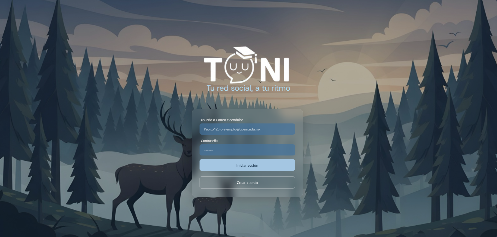

TU-UNI
Una red social universitaria conectada con una base de datos SQL en la nube a través de APIs (Demo). A university social network connected to a cloud SQL database through APIs (Demo). Uma rede social universitária conectada a um banco de dados SQL na nuvem por meio de APIs (Demo).
SQL · HTML · CSS · JS · Java